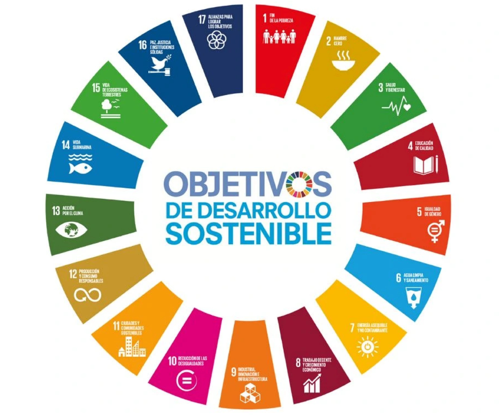
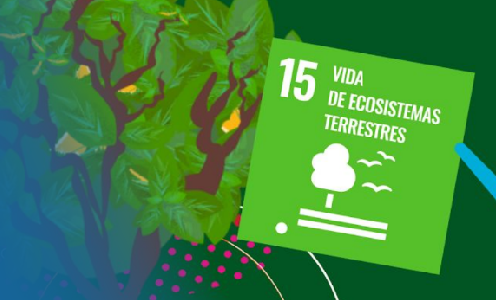
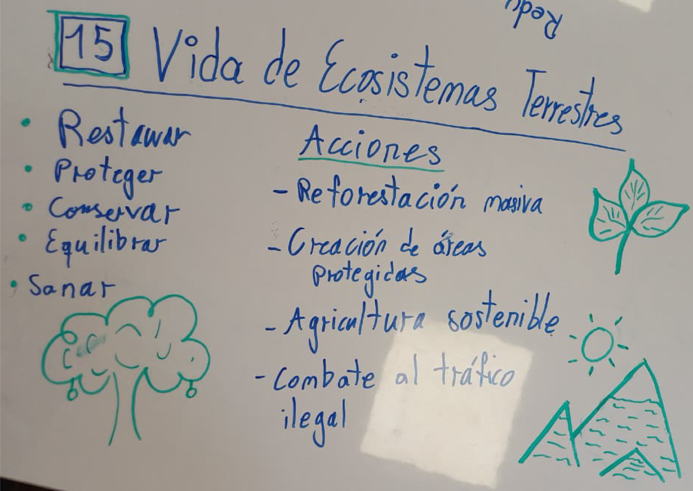
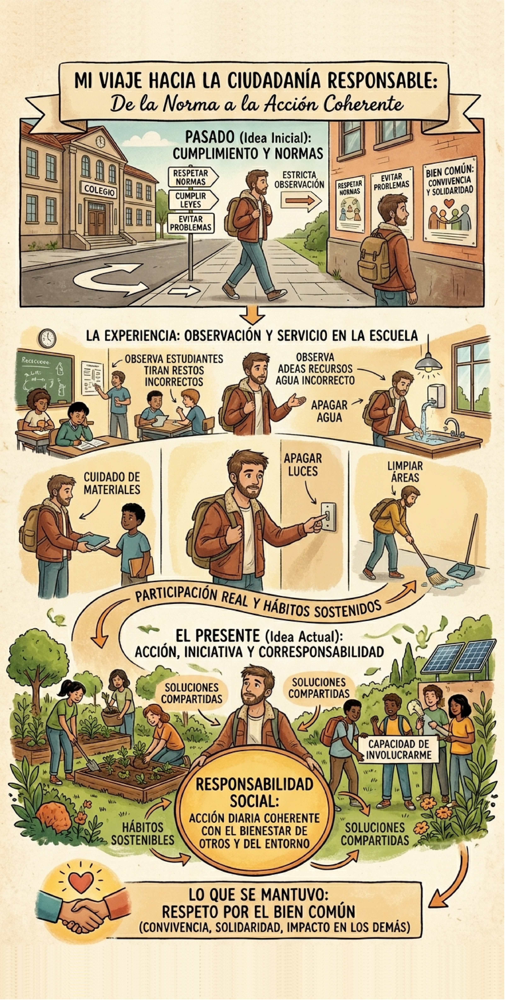

Mi
E-Portafolio
PASEC
Un recorrido reflexivo por mis aprendizajes, valores y compromisos adquiridos a lo largo del curso y mis horas de servicio comunitario.
Reflexión sobre mi Aprendizaje
Un producto elaborado en clase que refleja uno de mis mayores aprendizajes del curso.



Mi mayor aprendizaje
A través de este producto aprendí que los problemas ambientales no son ajenos a las realidades sociales,
sino que forman parte de ellas. Antes de esta actividad, tendía a ver los temas ambientales como algo
global o distante, relacionado principalmente con políticas o grandes acciones. Sin embargo, al vincular
el ODS 15 con mi experiencia en PASEC y CLF School, entendí que el entorno inmediato también refleja estas
problemáticas y que incluso pequeñas acciones pueden tener impacto.
Este aprendizaje fue relevante para mí porque cambió mi forma de entender el desarrollo social. Comprendí
que no se puede hablar de bienestar o educación sin considerar el entorno en el que las personas viven y
se desarrollan. En el contexto del servicio comunitario, observé cómo factores como la acumulación de
basura o la falta de hábitos ambientales afectan la dinámica diaria de los estudiantes, influyendo incluso
en su percepción del espacio y su comportamiento dentro de él. Esto me permitió ver que la educación
ambiental puede ser una herramienta concreta para generar cambios sostenibles desde edades tempranas.
En lo personal, este aprendizaje cuestionó una idea previa que tenía: que el impacto ambiental dependía
principalmente de grandes decisiones o acciones externas. Ahora entiendo que también está en lo cotidiano,
en hábitos y prácticas que muchas veces pasan desapercibidos. En lo profesional, me llevó a replantear mi
rol futuro, haciéndome ver que, independientemente del área en la que me desarrolle, es importante
considerar una visión integral que incluya la sostenibilidad. Además, comprendí que como profesional puedo
influir no solo desde lo técnico, sino también desde la educación y la concientización.
En definitiva, este producto no solo reforzó un concepto teórico, sino que lo conectó directamente con una
experiencia real, permitiéndome desarrollar una mirada más crítica, aplicada y consciente sobre mi entorno
y mi impacto en él.
Reflexión sobre Ciudadanía
Mi deber, mis definiciones y la evolución de mi comprensión sobre ciudadanía responsable.
Primera definición (inicial)
Básicamente, consideraba que la ciudadanía responsable era la capacidad de actuar de manera consciente, ética y
participativa en la sociedad, cumpliendo deberes cívicos y respetando las leyes, pero también comprometiéndose
con el bienestar colectivo. Pensaba que implicaba reconocer que nuestras acciones tienen un impacto en los demás
y en el entorno, por lo que era necesario tomar decisiones informadas orientadas al bien común.
Además, creía que suponía promover valores como la solidaridad, la sostenibilidad y el respeto por los derechos
humanos, así como involucrarse activamente en la solución de problemáticas sociales y ambientales. A mi parecer,
ser un ciudadano responsable no se limitaba a evitar hacer daño, sino a participar y contribuir de manera
constante a una sociedad más justa.
Segunda definición (portafolio)
Para mí, la ciudadanía responsable es actuar de manera consciente, ética y comprometida con mi entorno,
entendiendo que no basta con cumplir normas, sino que debo involucrarme activamente en lo que sucede a mi
alrededor. A partir de lo que he aprendido y vivido, reconozco que mis acciones cotidianas, como cuidar los
recursos, reducir residuos o participar en actividades comunitarias, tienen un impacto real en los demás y en
el ambiente.
Ser un ciudadano responsable, en mi caso, significa actuar con empatía, cuestionar hábitos que antes veía como
normales y tomar iniciativa para generar cambios, incluso en acciones pequeñas. Más allá de cumplir con mis
deberes, implica asumir un rol activo en la construcción de una sociedad más justa y sostenible, siendo constante
en mis decisiones y coherente con los valores que quiero reflejar en mi comunidad.
Comparación entre mis definiciones
En mi primera definición de ciudadanía responsable, yo la veía principalmente como cumplir leyes, respetar
normas básicas y evitar causar problemas. Era una idea correcta, pero limitada: la entendía más como una
obligación externa que como una práctica personal y constante. En cambio, en la segunda definición mi mirada
se volvió más profunda y concreta. Ya no la describo solo como “cumplir”, sino como actuar de forma activa,
consciente y coherente con el bienestar de otros y del entorno. Ese cambio se debe, sobre todo, a lo que viví
durante mi servicio y observación en la institución educativa, donde noté que problemas como la basura, el
desperdicio de recursos o el uso excesivo de plásticos no se resuelven solo con buenas intenciones, sino con
participación real y hábitos sostenidos.
Lo que cambió, entonces, fue el nivel de compromiso que le doy al concepto. Antes pensaba en ciudadanía
responsable como una conducta “correcta”; ahora la relaciono con iniciativa, corresponsabilidad y acción
cotidiana. Comprendí que apagar luces, promover el reciclaje, cuidar materiales o apoyar actividades educativas
no son gestos pequeños e irrelevantes, sino formas reales de construir comunidad. Esa transformación nació de
conectar la teoría con la práctica: ya no veo la responsabilidad social como algo abstracto, sino como algo que
se demuestra en decisiones diarias y en la capacidad de involucrarme en soluciones.
Sin embargo, también se mantuvo una idea central: el respeto por el bien común. Tanto en mi definición inicial
como en la actual, sigue presente la preocupación por la convivencia, la solidaridad y el impacto de mis acciones
en los demás. Eso se mantuvo porque, en el fondo, siempre entendí que ser ciudadano implica más que pensar en uno
mismo. Lo que cambió fue la profundidad con la que lo asumo: antes lo veía como una norma; ahora lo vivo como una
responsabilidad personal y una forma concreta de aportar a una sociedad más justa, sostenible y consciente.

Tres Valores que Guían mi Acción Ciudadana
Los valores que definen quién soy como ciudadano y cómo los viví en mis horas de servicio.
¿Por qué es importante en tu accionar ciudadano? ¿Cómo lo aplicaste durante tus horas de servicio?
¿Por qué es importante en tu accionar ciudadano? ¿Cómo lo aplicaste durante tus horas de servicio?
¿Por qué es importante en tu accionar ciudadano? ¿Cómo lo aplicaste durante tus horas de servicio?
Mis Compromisos:
Como Estudiante y Futuro Profesional
Compromisos específicos y realistas que asumo a partir de esta experiencia.
| Compromiso | Indicadores | Acciones concretas |
|---|---|---|
|
Como estudiante
Por editar
Describe tu compromiso como estudiante de forma específica y realista. |
Por editar
¿Cómo vas a evaluar que este compromiso se cumpla? |
|
|
Como profesional
Por editar
Describe tu compromiso como futuro profesional de forma específica y realista. |
Por editar
¿Cómo vas a evaluar que este compromiso se cumpla? |
|
Una Carta para Mí en 10 Años
Un mensaje en formato storytelling dirigido a mi yo del futuro.